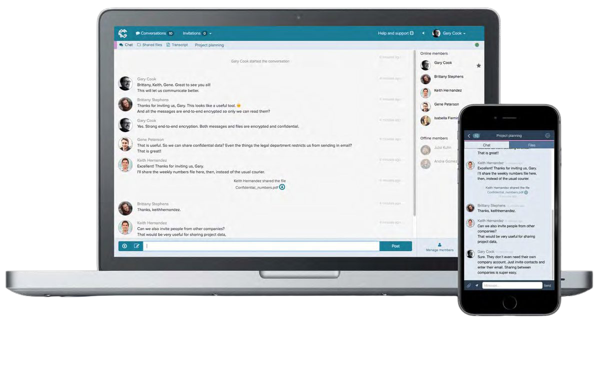

Case-studie · Kryptert meldingstjeneste
Crypho: ombygging av sikker meldingstjeneste
Crypho tilbyr sanntids, ende-til-ende-kryptert kommunikasjon på tvers av web, mobil og desktop, med kunder som Nasjonal sikkerhetsmyndighet, Oslo politidistrikt og Telemark sykehus. Verktøyet måtte forbli både sikkert og enkelt å bruke, samtidig som det tok igjen et marked som hadde gått videre.


Bakgrunn
Manglende funksjonalitet og et utdatert uttrykk
Crypho fungerte, men hadde blitt datert både i design og funksjonalitet. Brukertilbakemeldinger pekte på navigasjon, estetikk og et sett med manglende funksjoner som ville forbedret den daglige arbeidsflyten, mens konkurransebildet for meldingsverktøy hadde endret seg betraktelig siden appens opprinnelige lansering.
Utfordringer
Tre konkrete problemer
- Brukervennlighetsproblemer: navigasjonsutfordringer var en direkte kilde til brukerfrustrasjon.
- Manglende funksjonalitet: brukere kunne ikke enkelt administrere, filtrere eller søke i samtalene sine.
- Utdatert visuelt design: grensesnittet trengte et mer moderne uttrykk.
Tilnærming
Undersøke, restrukturere, redesigne, utvide
Arbeidet startet med en grundig analyse av brukertilbakemeldinger for å identifisere reelle smertepunkter. Navigasjonen ble restrukturert for å forenkle hvordan folk fikk tilgang til og beveget seg gjennom meldingene sine. Selve grensesnittet ble bygget om for en mer moderne, visuelt sammenhengende følelse. Og et sett med nye funksjoner ble lansert samtidig: utløpstid og sletting av meldinger, en visningsliste for meldinger, filtrering av samtaler, søk og sikker identifisering.
Min del dekket research og design på tvers av både eksisterende oppsett og nytt funksjonsarbeid, med et frontend-fokus under implementeringen: å forbedre eksisterende elementer, bygge nye, og teste funksjonalitet og stabilitet etter hvert som produktet ble lansert.
Rammer
Sikkerhet avgjorde hvor langt ombyggingen kunne gå
For å opprettholde krypterings- og fildelingsgarantiene kundebasen var avhengig av, kunne ikke alle prosesser strømlinjeformes eller alle funksjoner legges til. Enkelte avveininger på brukervennlighet ble stående, fordi alternativet ville svekket sikkerhetsmodellen produktet finnes for.